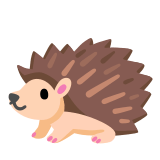

📊 Статистика подготовки к ЕГЭ
Прогресс по темам
Круговая диаграмма и процент освоения тем ЕГЭ
0
%
решено
Загрузка тем...
Прогресс подготовки

0
/
0
заданий решено
Выполнено:
0%
Задание 1
0 карт.
Стилистический анализ текста
научный, публицистический, разговорный стили речи
КЭС: 3.1.1 · 3.1.2 · 3.1.3 · 3.1.4
Задание 2
0 карт.
Средства связи предложений в тексте
союзы, частицы, местоимения на месте пропуска
КЭС: 3.2.1 · 3.2.2 · 3.2.4
Задание 3
65 карт.
Лексическое значение слова
многозначные слова, фразеологизмы, контекстные синонимы
КЭС: 3.2.1 · 3.2.2
Задание 4
33 карт.
Орфоэпические нормы (ударения)
ударения в словах и грамматических формах
КЭС: 3.2.3
Задание 5
0 карт.
Лексические нормы (паронимы)
паронимы: эффективный/эффектный и т. п.
КЭС: 3.2.4
Задание 6
0 карт.
Лексические нормы (плеоназм/тавтология)
плеоназм, тавтология: исключи лишнее слово
КЭС: 3.2.5 · 3.2.6
Задание 7
24 карт.
Морфологические нормы
формы слов: падежи, степени сравнения, числительные
КЭС: 3.5.1 · 3.5.2 · 3.5.3 · 3.5.4 · 3.5.5 · 3.5.6 · 3.5.7
Задание 8
23 карт.
Синтаксические нормы
согласование, управление, однородные члены, деепричастия
КЭС: 3.6.1 · 3.6.2 · 3.6.3 · 3.6.4 · 3.6.5 · 3.6.6 · 3.6.7 · 3.6.8
Задание 9
32 карт.
Правописание корней
проверяемые, непроверяемые, чередующиеся гласные в корне
КЭС: 3.7.1
Задание 10
6 карт.
Правописание приставок
пре-/при-, з-/с-, ы/и после приставок
КЭС: 3.7.2
Задание 11
42 карт.
Правописание суффиксов
суффиксы: -ек/-ик, -лив/-чив, -ец/-иц и др.
КЭС: 3.7.3 · 3.7.4 · 3.7.5
Задание 12
21 карт.
Правописание личных окончаний глаголов и суффиксов причастий
спряжение глаголов, суффиксы причастий
КЭС: 3.7.3 · 3.7.4
Задание 13
26 карт.
Правописание НЕ и НИ
НЕ и НИ: слитно/раздельно со всеми частями речи
КЭС: 3.7.7
Задание 14
30 карт.
Слитное, дефисное, раздельное написание слов
наречия, предлоги, союзы: тоже/то же, также/так же
КЭС: 3.7.8
Задание 15
24 карт.
Правописание -Н- и -НН-
-н-/-нн- в прилагательных, причастиях, наречиях
КЭС: 3.7.6
Задание 16
46 карт.
Пунктуация в ССП и при однородных членах
запятая перед И: ССП, однородные члены
КЭС: 3.8.1 · 3.8.4 · 3.8.7
Задание 17
31 карт.
Знаки препинания при обособленных членах
причастные и деепричастные обороты
КЭС: 3.8.5
Задание 18
27 карт.
Знаки препинания при вводных словах и обращениях
вводные слова, обращения, междометия
КЭС: 3.8.6
Задание 19
36 карт.
Пунктуация в СПП
придаточные в СПП, знаки на стыке
КЭС: 3.8.7
Задание 20
34 карт.
Пунктуация в сложных предложениях с разными видами связи
СПП + ССП + БСП: разные виды связи
КЭС: 3.8.7 · 3.8.8
Задание 21
0 карт.
Пунктуационный анализ
тире, двоеточие, запятая по одному правилу
КЭС: 3.8.1 · 3.8.2 · 3.8.3 · 3.8.4 · 3.8.5 · 3.8.6 · 3.8.7 · 3.8.8
Задание 22
0 карт.
Текстовый анализ (смысловая связь)
соответствие/несоответствие содержания текста
КЭС: 3.1.2 · 3.3.1
Задание 23
0 карт.
Функционально-смысловые типы речи
повествование, описание, рассуждение
КЭС: 3.3.1 · 3.3.2
Задание 24
0 карт.
Лексические средства связи
синонимы, антонимы, фразеологизмы из текста
КЭС: 3.2.1 · 3.2.2 · 3.4.1
Задание 25
0 карт.
Средства связи предложений
связь через местоимение, союз, лексический повтор
КЭС: 3.2.1 · 3.2.2 · 3.4.1
Задание 26
0 карт.
Языковые средства выразительности
метафора, эпитет, инверсия, парцелляция и др.
КЭС: 3.4.1 · 3.4.2
Задание 27
0 карт.
Сочинение
сочинение-рассуждение по прочитанному тексту
📈 Диаграмма прогресса по заданиям